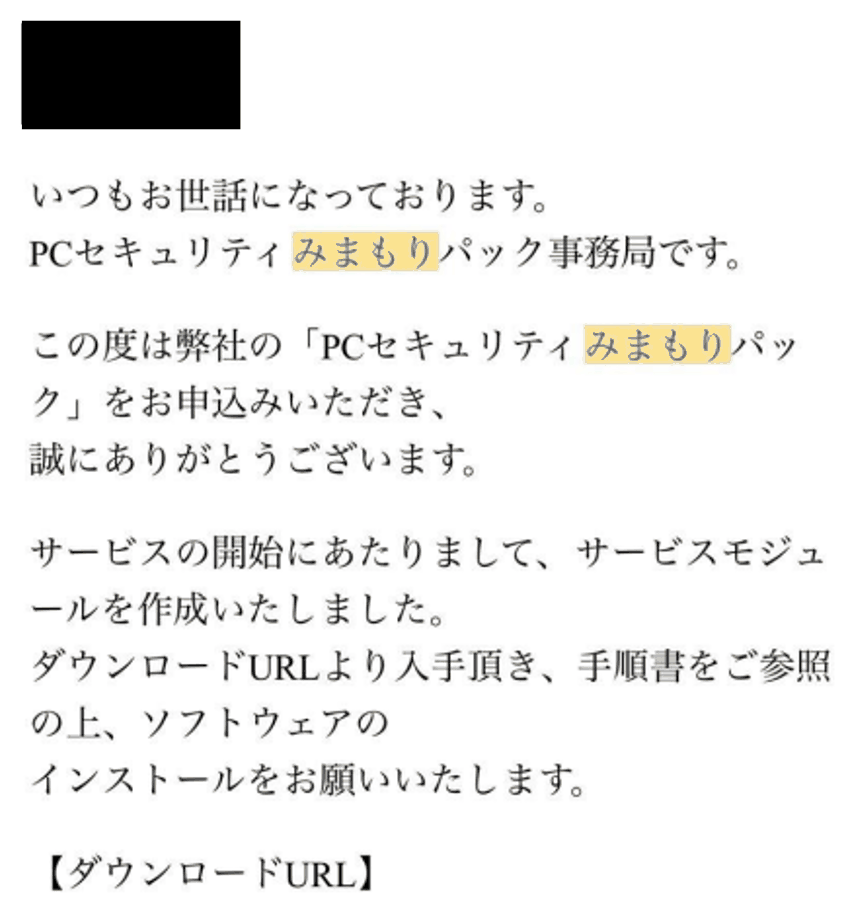

ホーム/実績報告に必要な書類/8 PCセキュリティみまもりパックの納品日
PCセキュリティみまもりパックの納品日
全員にお願いしている項目です。用意していただく書類はありません。事務局から届いた「サービス開始のご案内メール」を受け取った日を、株式会社MAIN'Sの担当者までお知らせください。
なぜ日付が必要なのですか
PCセキュリティみまもりパックは、今回の申請にすべての方が含めているサービスです。実績報告の入力画面には、その「納品日」を入力する欄があります。このサービスは機器のように箱で届くものではないため、ご案内メールが届いた日を納品日として入力します。そのため、メールを受け取った日付を教えていただく必要があります。
1. このようなメールを探してください
「PCセキュリティみまもりパック事務局」から、次のような内容のメールが届いています。

- 見分けるポイントは、本文の「PCセキュリティみまもりパック事務局です」と「サービスモジュールを作成いたしました」という一文です。
- 見つからないときは、メールソフトの検索欄に「みまもり」と入れて探すと見つけやすくなります。
- 受信トレイにない場合は、迷惑メールフォルダもご確認ください。
2. 受信した日をお知らせください
次のどちらか、やりやすい方法でお知らせください。おすすめは「スクリーンショットを送る」方法です。日付の読み間違いがなく、こちらでメールの内容も確認できるため、やり取りが一度で済みます。
おすすめ：スクリーンショットを送る
メールを開いた画面を撮影し、株式会社MAIN'Sの担当者へお送りください。
受信した日付が写るように撮ってください本文だけを撮ると、いつ届いたメールかが分かりません。メールの上の方に表示されている受信日時（例：2026/11/12 10:15）と、件名・差出人が一緒に写るように撮影してください。
- パソコン（Windows）：Windowsキー ＋ Shift ＋ S を同時に押し、写したい範囲をドラッグで囲みます。そのまま貼り付けて送れます。
- iPhone：サイドボタン ＋ 音量を上げるボタンを同時に押して離します。
- Android：電源ボタン ＋ 音量を下げるボタンを同時に押します（機種によって異なる場合があります）。
日付だけを伝える
メールの受信日時を確認し、日付を株式会社MAIN'Sの担当者へお伝えください。
お送りいただく文面の例PCセキュリティみまもりパックのメールは、2026年11月12日に届いていました。
お知らせいただく方法は、メール・お電話など、ふだん株式会社MAIN'Sとやり取りしている方法で差し支えありません。
よくあるご質問
メールが見つからない・削除してしまった
検索と迷惑メールフォルダを確認しても見つからない場合は、無理に探し続けず株式会社MAIN'Sの担当者までご連絡ください。
同じようなメールが何通か届いている
「サービスモジュールを作成いたしました」と書かれたメールが届いた日をお知らせください。どれか判断がつかない場合は、それぞれのスクリーンショットをお送りいただければこちらで確認します。
メールを開いた日やソフトをインストールした日でもよいですか
いいえ。お知らせいただきたいのは、メールが届いた（受信した）日です。開いた日やインストールした日とは異なる場合がありますのでご注意ください。